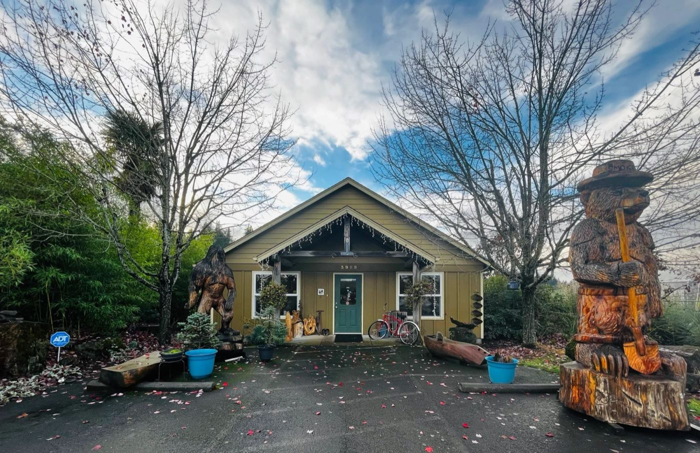

It started with a bicycle and a love for trees
Elwood’s Tree Service was founded by Elwood A. Newhouse in 1981. He started as a 21-year-old riding his bike door to door to advertise his business, and it grew into the tree service Salem knows today.
The company is firm in promoting and practicing modern arboriculture, the care of trees and shrubs, and in keeping up with technology and changes in the profession.
“We focus on good ethics, integrity, good will, and educating the public in why proper and modern arboriculture is so important to each of us.”

A beech is planted on Liberty Street
A European beech is planted at 1692 Liberty Street NE, grown from seed sent from Switzerland by relatives of Jacob Amsler Sr.
Elwood starts the company
Elwood A. Newhouse, 21, rides his bike door to door advertising his new tree service.
Adopting a Salem Heritage tree
Elwood adopts the 88-year-old Heritage beech on Liberty Street to preserve, prune and feed it. The tree wears a small plaque that identifies it.
Still on a “crusade”
Certified Arborist PN #0735, CCB #62724, and still teaching Salem that topping is not proper pruning.